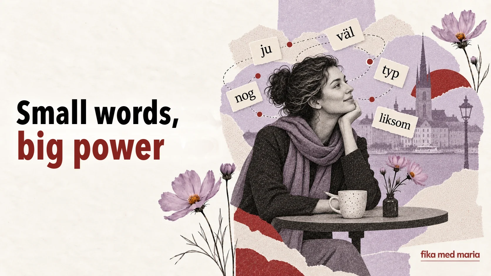

Small words, big power: ju, väl, nog, typ and liksom

You can know every word in a sentence and still not understand why it sounded like a reproach. The reason is often hidden in a particle that the dictionary translates vaguely or suggests leaving untranslated altogether.
Ju, väl, nog, typ and liksom are small, but they steer the relationship between the people talking. They show what we consider obvious, what we doubt, what answer we expect and how literally to take what is said.
Ju: “you know this already”
Ju signals that the information is known to the person you’re talking to, or should be clear to them.
Det är ju fredag.
But it’s Friday today, you know.
Du vet ju hur han är.
You know what he’s like.
Jag har ju redan sagt det.
I’ve already said that, you know.
Depending on the intonation, ju can create a sense of closeness – “we both know this” – or sound irritated: “this should have been obvious”.
Väl: I expect you to agree
Väl often turns a statement into a gentle question or a request for confirmation.
Du kommer väl i morgon?
You’ll come tomorrow, won’t you?
Det är väl inte så farligt?
It’s not that bad, is it?
Du har väl inte glömt mötet?
You haven’t forgotten about the meeting, have you?
Sometimes the answer the speaker wants is already tucked into a phrase with väl. The person isn’t simply asking whether you’ll come. They’re showing that they expect you to be there.
Nog: probably, but I can’t guarantee it
Nog can express a guess or cautious confidence.
Hon kommer nog senare.
She’ll probably come later.
Det går nog bra.
I think it’ll be fine.
Jag hinner nog.
I expect I’ll make it.
Interestingly, the Ukrainian “мабуть” (probably) sometimes sounds unsure, while the Swedish nog, said with a certain intonation, can be almost reassuring: everything should turn out fine.
Typ: roughly, sort of, something like that
Typ has long since gone beyond the meaning “type” or “category”. In spoken language it often signals approximation.
Det var typ hundra personer där.
There were about a hundred people there.
Han är typ chef.
He’s sort of a manager / something like a manager.
Jag blev typ chockad.
I was, like, shocked.
It can either mark something as approximate or simply work as a filler word.
Liksom: “somehow”, “kind of”, “you know”
Liksom is particularly dependent on context.
Det kändes liksom fel.
It felt wrong somehow.
Han bara stod där, liksom.
He just stood there, you know.
Jag vet liksom inte vad jag ska säga.
I don’t even know what to say.
Liksom often shows that the speaker finds it hard to put a feeling into precise words, or that they are inviting the listener to fill in the meaning for themselves.
One sentence – five different moods
Let’s take a neutral sentence:
Han kommer i morgon. – He’s coming tomorrow.
Now let’s change just one word:
- Han kommer ju i morgon. – He’s coming tomorrow, after all; we know that.
- Han kommer väl i morgon? – He’s coming tomorrow, isn’t he?
- Han kommer nog i morgon. – He’s probably coming tomorrow.
- Han kommer typ i morgon. – He’s coming roughly tomorrow / something like that.
- Han kommer liksom i morgon… – He’s kind of coming tomorrow… but there’s a catch.
The grammar has hardly changed. The speaker’s attitude to the information has changed completely.
How to learn them
Don’t write down ju = “after all” and väl = “probably”. Equations like that quickly stop working.
Instead, make flashcards with whole situations:
Situation: a friend has forgotten something you had already agreed on.
Phrase: Men vi har ju bestämt det!
Situation: you expect the person to come.
Phrase: Du kommer väl?
Which phrase best conveys “She’s probably already home”?
- Hon är ju hemma.
- Hon är nog hemma.
- Hon är väl hemma?
Show answer
Correct answer: 2.
At Speak Café and in one-to-one lessons we practise words like these in situations, with intonation and in real dialogues. Speak Café.
Can I simply not use these words?
You can, but your speech will sound more direct and bookish. It’s even more important to learn to recognise them in what other people say.
Which one is the hardest?
Usually ju and väl, because they convey not a fact but an expectation between the people talking.